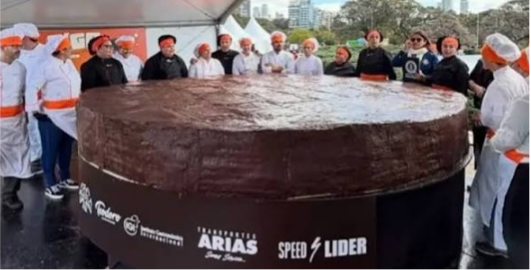

· Dato curioso
La torta más grande del mundo

Corría 1995 cuando Pastelería Mil Sabores recibió una invitación poco común: sumarse a un equipo de pasteleros que buscaba preparar la torta más grande del mundo. Durante semanas, nuestros maestros coordinaron turnos, recetas y transporte para que cada capa llegara fresca al lugar del evento.
Una cocina de cientos de manos
El desafío no era solo el tamaño: había que mantener el mismo sabor y textura en cada sección. Por eso se estandarizaron las recetas de bizcocho y relleno, y se repartieron tareas entre equipos que trabajaban en paralelo.
“Lo más difícil no fue hornear, fue lograr que todas las piezas encajaran como una sola torta”, recuerda uno de nuestros pasteleros fundadores.
Lo que aprendimos
- La planificación es tan importante como la receta.
- Trabajar en equipo permite lograr lo que parece imposible.
- Una celebración compartida se recuerda por décadas.
Treinta y un años después, ese espíritu sigue presente en cada torta que preparamos.